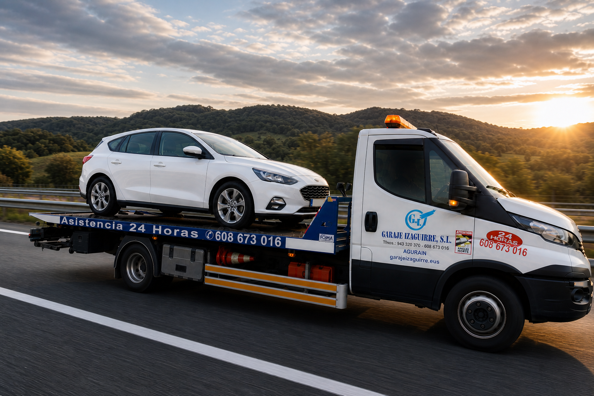
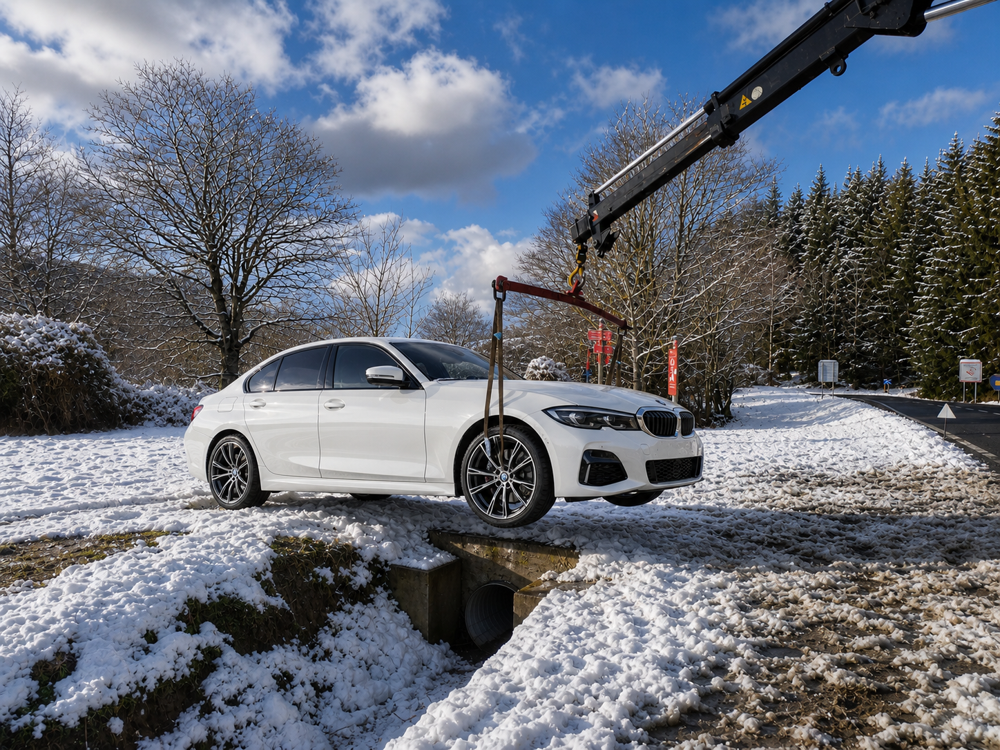
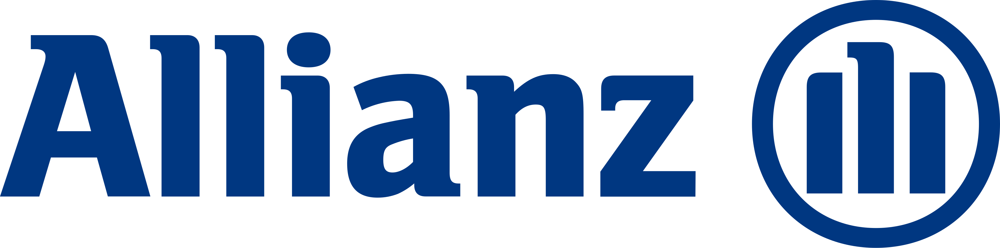
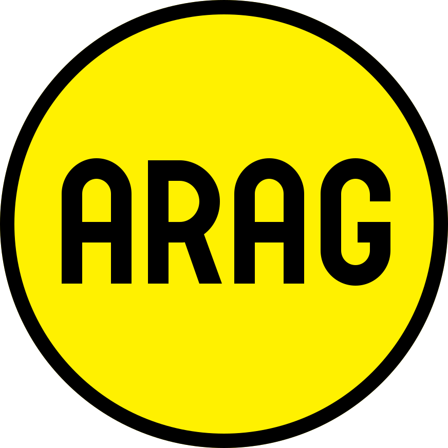
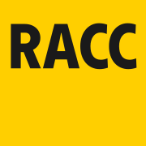
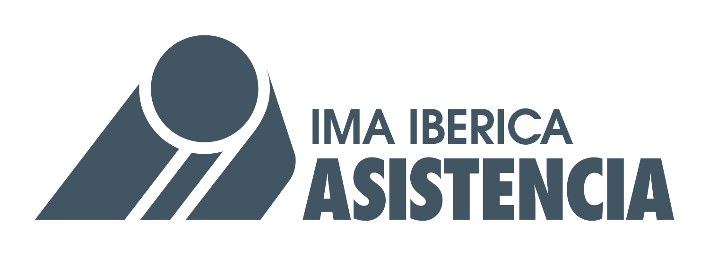

Desde 1983 en el sector, respaldados por las principales compañías aseguradoras de la zona.
Asistencia 24h
Grúa en Salvatierra-Agurain, Vitoria-Gasteiz, Álava y Alsasua
Desde 1983 en la asistencia en carretera y transporte de vehículos. Respuesta rápida, precios claros y servicio profesional las 24 horas.

Disponibles cualquier día del año, a cualquier hora. Salimos desde Agurain para llegar en el menor tiempo posible.
Presupuesto claro antes de actuar. Tarifas competitivas y transparentes, sin costes ocultos.

Servicio especializado
Desde 1983 asistiendo a conductores y aseguradoras en Salvatierra-Agurain, Vitoria-Gasteiz, Álava y Alsasua.
Somos una empresa familiar con más de 40 años de experiencia, desde 1983. Trabajamos a diario con las principales compañías de asistencia y ofrecemos transporte de vehículos para particulares y profesionales. Trato directo, respuesta rápida y precios sin letra pequeña.
Confianza operativa
Respaldados por las principales compañías de asistencia
Gestionamos expedientes de asistencia en carretera para aseguradoras y plataformas. Años de colaboración continua avalan nuestra fiabilidad y profesionalidad.





Servicios
Grúa, retirada y traslado de vehículos
Asistencia 24 horas
Disponibles cualquier día del año para asistencias gestionadas por compañías aseguradoras: día, noche, fines de semana y festivos.
Transporte de vehículos
Traslado de coches y vehículos al destino acordado: domicilio, concesionario, campa, compraventa o punto indicado.
Accidentes y retirada
Retiramos el vehículo de la vía y coordinamos el traslado para reducir tiempos y recuperar la normalidad cuanto antes.
Motos y vehículos especiales
Recogida y transporte de motocicletas, vehículos de colección o unidades que requieren especial cuidado en la carga.
Cobertura amplia
Base en Salvatierra-Agurain con cobertura en Vitoria-Gasteiz, Álava, Alsasua y entorno cercano. Llegamos rápido a donde nos necesites.
Particulares y profesionales
Trato directo para conductores, compraventas, talleres, empresas y cualquier necesidad puntual de traslado.
Transporte de vehículos
Mueve tu vehículo sin complicaciones
Realizamos transportes para particulares y profesionales: coches comprados o vendidos, traslados a taller, entregas a domicilio, motos y vehículos que no pueden circular. Dínos origen, destino y vehículo, y nos encargamos del resto.
Preguntas frecuentes
Información útil antes de llamar
¿Trabajáis con compañías aseguradoras?
Sí. Llevamos años gestionando asistencias para las principales aseguradoras y plataformas de asistencia en carretera de la zona.
¿Cuánto tarda en llegar la grúa?
Dependiendo de la ubicación y el tráfico, intentamos llegar en el menor tiempo posible. Salimos desde Agurain con acceso rápido a los principales ejes de la zona.
¿Puedo pedir presupuesto para transportar un coche?
Sí. Indícanos origen, destino y tipo de vehículo y te damos precio antes de confirmar. Sin sorpresas.
¿Transportáis motos o vehículos especiales?
Sí. Podemos coordinar el traslado de motos, vehículos y unidades que requieren especial cuidado en la carga.
¿Puedo enviar mi ubicación por WhatsApp?
Sí. Es la forma más cómoda para ubicar el vehículo y coordinar la salida con menos margen de error.
Contacto